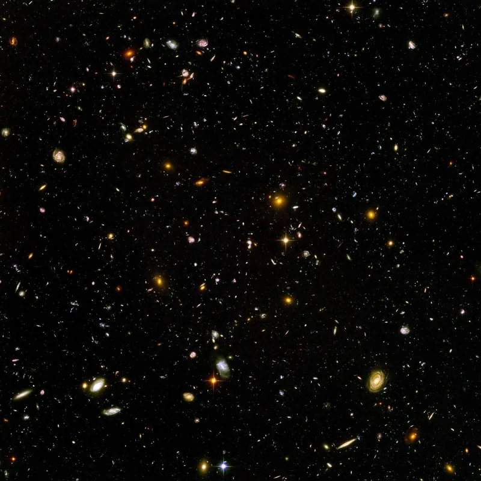

Becoming gods, still affirmed in a 2014 essay
UnrefutedNo good counter-argument has been published by LDS scholars.
What is taught
D&C 132:19-20 says the faithful sealed in celestial marriage "shall pass by the angels, and the gods." Then "shall they be gods, because they have no end… because they have all power." Joseph Smith's King Follett sermon of 1844 taught that God "was once a man like us," and that the Saints must learn "how to be gods yourselves." Lorenzo Snow put it in a couplet: as man now is, God once was; as God now is, man may be.
What the church says now
The 2014 essay Becoming Like God complains that this gets reduced to a cartoon about people getting their own planets. Fair enough.
But read on. The essay reaffirms the substance — exaltation to godhood, with the power to create.
What the Bible says
Isaiah 43:10 has God say "before me there was no God formed, neither shall there be after me." Isaiah 44:6-8 and 45:5 say the same. And notice who first offered godhood in Scripture.
The serpent, in Genesis 3:5: "ye shall be as gods."
Their answer, at full strength
And it is serious. Deification language runs through early Christianity.
Psalm 82:6, quoted by Jesus in John 10:34: "Ye are gods." 2 Peter 1:4 on being "partakers of the divine nature." Romans 8:17 on being joint-heirs with Christ. Irenaeus taught it, and Clement of Alexandria wrote that the Word became man so that man might learn how to become God.
On this reading the church restores theosis, not polytheism. Isaiah's denials are aimed at idols.
And exalted beings stay forever subordinate to the Father.
How strong is this argument?
Strong for you, but you must handle theosis honestly or you will lose. Early Christian deification always kept the line between Creator and creature.
It never taught that God was once a man, and never made the deified gods in the sense D&C 132 describes. Isaiah 43:10 is about existence, and it is still standing.
What to say
"Isaiah 43:10 says no God will be formed after him. How do you read that?"


How they answer this — at its strongest
Early Christians taught theosis, and Jesus quoted 'Ye are gods' at John 10:34.
The essay's strongest case is that this language runs through early Christianity. Psalm 82:6 says 'Ye are gods', and Jesus quotes it at John 10:34. 2 Peter 1:4 speaks of 'partakers of the divine nature'. Romans 8:17 speaks of being joint-heirs with Christ.
Church fathers from Irenaeus to Clement of Alexandria taught it. Clement wrote that the Word of God became man 'that thou mayest learn from man how man may become God'.
On that reading, exaltation restores an ancient doctrine of theosis rather than inventing many gods. Isaiah's denials are read as aimed at idols and rival gods, not at God's own children inheriting his nature. Exalted beings stay forever under the Father. And the essay stresses how little has been revealed about the first half of Lorenzo Snow's couplet.
The verdict
Strong for you, but handle theosis honestly: it always kept Creator and creature apart.
The teaching is established from their own canon and from the 2014 essay Becoming Like God. That essay rejects the planet cartoon while restating the substance: godhood, with the power to create.
The theosis case does not close the gap. Deification in the fathers always kept the line between Creator and creature. It never taught that God was once a man. And it never made the deified gods in the sense D&C 132:19-20 describes.
Isaiah 43:10 is left in direct tension. 'Before me there was no God formed, neither shall there be after me.'
Sources
- Gospel Topics Essay — Becoming Like God
- King Follett Sermon (Ensign reprint)
- Doctrine and Covenants 132, primary text
- Pastor Unlikely — 41 Authentic Bible Verses to Contradict Mormonism